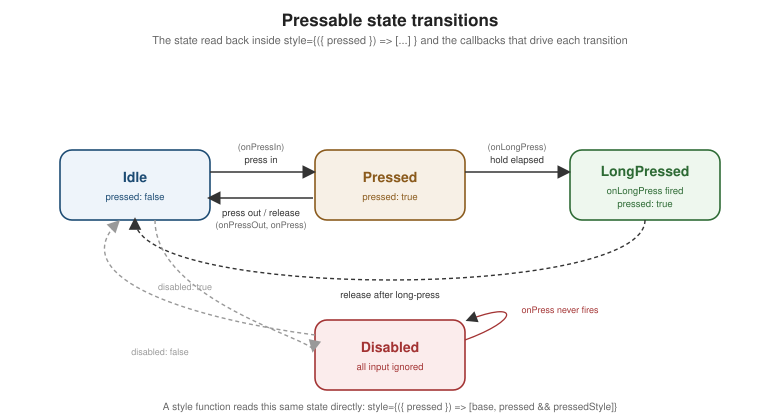

Touches and Gestures
|
This content was generated with the assistance of AI and should be verified against the official documentation before being relied on in production. |
Core Components and React Fundamentals first
introduced Pressable and its onPress handler on Places's PlaceCard. This page covers touch and gesture
handling in full: Pressable’s complete API and the legacy Touchables it replaces, the low-level gesture
responder system underneath all of it, `PanResponder, and React Native Gesture Handler — the higher-level,
UI-thread-driven library most real apps reach for once a gesture is more than a tap. The draggable map pin below
is deliberately illustrative rather than exhaustive: Animations (later in
this section) covers Reanimated’s shared values and worklets in full, and is what a production drag gesture would
actually pair Gesture Handler with.
Pressable, Button, and the Legacy Touchables
Pressable
Pressable is React Native’s modern, composable primitive for anything that responds to touch. Beyond the
onPress handler already introduced, four features cover almost everything a tap target needs:
-
A style function.
styleaccepts either a plain style object/array (as every other Core Component’sstyledoes) or a function of the current press state, called on every press-state change so the pressed visual feedback stays perfectly in sync with the underlying touch rather than being approximated with a separateonPressIn/onPressOutpair ofsetStatecalls:<Pressable style={({ pressed }) => [styles.button, pressed && styles.buttonPressed]} onPress={handlePress} > <Text style={styles.buttonLabel}>Save place</Text> </Pressable>The same function form works for
children, letting the rendered content itself react topressed(an icon swapping color, for example) without any local state at all. -
hitSlop. Expands the touchable area beyond the element’s visual bounds — either a single number applied to all four edges or a{ top, left, bottom, right }object — without changing how large the element actually renders. This is how a small icon-sized favourite toggle (visually 24 density-independent points, asstyling.adocrenders it) still meets the platform’s recommended minimum touch-target size without inflating its own layout. -
android_ripple. An Android-only,{ color, borderless, radius }config that plays Android’s native Material ripple feedback on press; ignored outright on iOS, where `Pressable’s own press-state-driven styling (the style function above) is the cross-platform equivalent instead of a second, iOS-specific effect. -
disabled. Suppresses every callback (onPress,onPressIn,onPressOut,onLongPress) and stops the style function from ever reportingpressed: true, without unmounting or hiding the element — exactly theDisabledstate below.

Button
Button is the simplest, least customizable option: a single native-looking button with a required title
string, an onPress handler, and a color prop — no style prop at all, and no way to change its shape,
padding, or typography beyond that one color:
import { Button } from 'react-native';
<Button title="Save place" onPress={handleSave} color={theme.colors.primary} />It renders each platform’s own native button chrome (a filled Material button on Android, plain tinted text on
iOS), which makes it the right choice only for a genuinely native-chrome control that needs no visual
customization at all; every other button in Places — anything needing the theme’s own shape, spacing, or
typography — is a styled Pressable instead.
The Legacy Touchables
Before Pressable, React Native shipped a family of Touchable* components, still present and still working,
but considered legacy:
| Component | Feedback style |
|---|---|
|
Fades its child’s opacity while pressed — the most commonly reached-for legacy Touchable. |
|
Overlays a solid |
|
No visual feedback at all — only the press callbacks; commonly wrapped around a child that already provides its own feedback. |
|
Android-only: plays the platform’s native ripple, with no iOS equivalent at all — the exact gap |
Each one bakes in exactly one feedback style, which meant picking the right Touchable per platform and per
visual effect — TouchableOpacity here, TouchableNativeFeedback there behind a Platform.OS check, and a
plain View wrapped in TouchableWithoutFeedback wherever neither fit. Pressable supersedes the whole family
with one unified, cross-platform API: the style function expresses whatever feedback a design calls for
(opacity, highlight, scale, or nothing) directly, android_ripple opts into native ripple on the one platform
that has it, and there is no longer a "which Touchable" decision to make. New code in Places uses Pressable
exclusively; the legacy Touchables are documented here only because existing/third-party code still uses them.
The Gesture Responder System and Higher-Level Gesture APIs
The Gesture Responder System Lifecycle
Underneath Pressable (and every other touch-handling component) sits React Native’s gesture responder
system — the low-level mechanism that decides, touch by touch, which single component on screen "owns" it.
Any component can opt in with a matched pair of Set methods and act on the result with the matching Responder
callbacks:
-
onStartShouldSetResponder— called on a new touch; returningtrueasks to become the responder for it. -
onMoveShouldSetResponder— the same question asked again as the touch moves, for a component that only wants to claim a gesture once it looks like a drag rather than a tap. -
onResponderGrant— fires once this component has actually been granted the responder role; the right place to record the touch’s starting position. -
onResponderMove— fires on every subsequent move while this component holds the responder role, carrying the touch’s current position and delta. -
onResponderRelease— fires when the touch lifts while this component still holds the responder role.
Because only one component can hold the responder role at a time, a parent that also wants the gesture (a
ScrollView deciding whether a touch is a scroll rather than a tap on one of its children) can ask the current
holder to give it up:
-
onResponderTerminationRequest— called on the current responder when another component (typically an ancestor) requests the role; returningfalserefuses to yield it. -
onResponderTerminate— fires on the component that held the responder role once it has been taken away, either because it returnedtruefromonResponderTerminationRequestor because the system revoked the role unconditionally (an incoming phone call, for example).
PanResponder
Wiring all five-plus callbacks above by hand for every draggable element is repetitive, so PanResponder wraps
the whole lifecycle behind a single object built with PanResponder.create:
import { PanResponder } from 'react-native';
const panResponder = PanResponder.create({
onMoveShouldSetPanResponder: (_event, gestureState) =>
Math.abs(gestureState.dx) > 2 || Math.abs(gestureState.dy) > 2,
onPanResponderGrant: () => {
/* touch started; record the starting offset */
},
onPanResponderMove: (_event, gestureState) => {
/* gestureState.dx / gestureState.dy: total movement since the gesture began */
},
onPanResponderRelease: (_event, gestureState) => {
/* gestureState.vx / gestureState.vy: release velocity, useful for a fling/momentum effect */
},
});
<View {...panResponder.panHandlers} style={styles.draggable} />gestureState (the second argument to every PanResponder callback) already accumulates total displacement and
velocity, which is what makes PanResponder the natural pairing with an Animated.ValueXY — a single
Animated.Value pair for x and y together, updated directly from gestureState.dx/dy on every move — shown in
full in the draggable pin example below.
React Native Gesture Handler
PanResponder and the raw responder system both run their callbacks on the JS thread: every move event
crosses the bridge/JSI boundary into JavaScript before anything visible happens, which is perceptibly laggy under
JS-thread load (a busy list re-render, a network response being processed) — exactly the kind of latency
React Native Architecture Under the Hood already
describes the New Architecture narrowing but not eliminating for JS-thread-bound work.
React Native Gesture Handler (from Software
Mansion) is the modern alternative: it recognizes gestures natively and, paired with Reanimated
(covered in full later in this section), can update the screen entirely
on the UI thread, without waiting on the JS thread for each frame — much lower latency than PanResponder
for exactly the gestures (drag, pinch, swipe) where that latency is most visible.
A gesture handler component declares one or more Gesture objects and attaches them to its subtree with
GestureDetector:
import { Gesture, GestureDetector } from 'react-native-gesture-handler';
const pan = Gesture.Pan()
.onUpdate((event) => {
/* event.translationX / event.translationY, updated on the UI thread */
})
.onEnd((event) => {
/* event.velocityX / event.velocityY at release */
});
<GestureDetector gesture={pan}>
<View style={styles.draggable} />
</GestureDetector>Beyond Gesture.Pan(), Gesture.Tap() and Gesture.Pinch() cover tap and pinch-to-zoom the same way, and
gestures compose explicitly rather than through responder negotiation alone:
-
Gesture.Simultaneous(gestureA, gestureB)— both gestures are allowed to recognize and run at once (a pinch and a pan on a map, together). -
Gesture.Race(gestureA, gestureB)— whichever gesture recognizes first "wins" and the other is cancelled, the same either/or outcome the raw responder system’s termination negotiation produces, expressed declaratively instead of through a pair ofonResponderTerminationRequest/onResponderTerminatecallbacks.
Swipeable and Cancellable Gestures
Swipeable (also from react-native-gesture-handler) is a ready-made swipe-to-reveal-actions row: swiping a row
left or right slides its content aside to reveal renderLeftActions/renderRightActions, the pattern behind the
swipe-to-delete Places row below.
A gesture is cancellable whenever something can interrupt it before it completes — exactly what makes
Gesture.Race() above meaningful: a Gesture.Pan() raced against a ScrollView’s own scroll gesture is
cancelled the moment the scroll gesture recognizes instead, the same either/or outcome
`onResponderTerminationRequest negotiates at the lower level. .onFinalize() is the gesture-level equivalent of
onResponderTerminate — it runs whether the gesture ended normally (.onEnd()) or was cancelled/failed
partway through, which makes it the right place for cleanup that must run either way (resetting a dragged pin’s
position if the drag is cancelled mid-gesture, for example).
Places: Press Feedback, Draggable Pins, and Swipe-to-Delete
(a) Press Feedback on PlaceCard
styling.adoc’s themed `PlaceCard already wraps its content in a Pressable; adding a style function is the
only change needed for it to visibly dim and scale while pressed, with no extra state:
// src/features/places/components/PlaceCard.tsx (excerpt -- adds press feedback to the existing card Pressable)
<Pressable
style={({ pressed }) => [styles.card, pressed && styles.cardPressed]}
onPress={() => onPress(place.id)}
>
{/* photo, name, category, favourite toggle unchanged from styling.adoc */}
</Pressable>// src/features/places/components/PlaceCard.tsx (excerpt -- added to createStyles(theme) from styling.adoc)
cardPressed: {
opacity: 0.85,
transform: [{ scale: 0.98 }],
},Because cardPressed is a plain style object layered through the same style array pattern styling.adoc
already covers, it composes with every other conditional style PlaceCard applies without any extra branching
in the component body itself.
(b) A Draggable Map Pin: PanResponder vs. Gesture Handler
Both versions below update a place’s latitude/longitude as its map pin is dragged, letting the same gesture
double as a "correct the pin’s position" affordance. Neither actually moves a real map SDK’s marker view — that
detail is specific to whichever map library Places renders through, out of scope for this page — both instead
show the gesture wiring in isolation, moving a plain View standing in for the pin.
PanResponder, driving an Animated.ValueXY directly:
// src/features/places/components/DraggablePin.PanResponder.tsx
import { useMemo, useRef } from 'react';
import { Animated, PanResponder, View } from 'react-native';
import type { Place } from '../types';
interface DraggablePinProps {
place: Place;
onPositionChange: (latitude: number, longitude: number) => void;
pointsPerDegree: number; // conversion factor supplied by the map view in use
}
export function DraggablePin({ place, onPositionChange, pointsPerDegree }: DraggablePinProps) {
const pan = useRef(new Animated.ValueXY()).current;
const panResponder = useMemo(
() =>
PanResponder.create({
onStartShouldSetPanResponder: () => true,
onPanResponderMove: Animated.event([null, { dx: pan.x, dy: pan.y }], { useNativeDriver: false }),
onPanResponderRelease: (_event, gestureState) => {
const newLatitude = (place.latitude ?? 0) - gestureState.dy / pointsPerDegree;
const newLongitude = (place.longitude ?? 0) + gestureState.dx / pointsPerDegree;
onPositionChange(newLatitude, newLongitude);
pan.setValue({ x: 0, y: 0 }); // snap the driven Animated.ValueXY back once the real position updates
},
}),
[pan, place.latitude, place.longitude, pointsPerDegree, onPositionChange],
);
return <Animated.View {...panResponder.panHandlers} style={[styles.pin, { transform: pan.getTranslateTransform() }]} />;
}The same gesture with Gesture Handler’s GestureDetector/Gesture.Pan(), using plain component state here for
illustration — a real implementation would drive this from a Reanimated shared value instead, exactly the
UI-thread-only update Animations covers in full:
// src/features/places/components/DraggablePin.GestureHandler.tsx
import { useState } from 'react';
import { View } from 'react-native';
import { Gesture, GestureDetector } from 'react-native-gesture-handler';
import type { Place } from '../types';
interface DraggablePinProps {
place: Place;
onPositionChange: (latitude: number, longitude: number) => void;
pointsPerDegree: number;
}
export function DraggablePin({ place, onPositionChange, pointsPerDegree }: DraggablePinProps) {
const [offset, setOffset] = useState({ x: 0, y: 0 });
const pan = Gesture.Pan()
.onUpdate((event) => {
setOffset({ x: event.translationX, y: event.translationY }); // a Reanimated shared value avoids this re-render
})
.onEnd((event) => {
const newLatitude = (place.latitude ?? 0) - event.translationY / pointsPerDegree;
const newLongitude = (place.longitude ?? 0) + event.translationX / pointsPerDegree;
onPositionChange(newLatitude, newLongitude);
setOffset({ x: 0, y: 0 });
})
.onFinalize(() => {
setOffset({ x: 0, y: 0 }); // runs on a cancelled/failed gesture too, e.g. raced against the map's own pan
});
return (
<GestureDetector gesture={pan}>
<View style={[styles.pin, { transform: [{ translateX: offset.x }, { translateY: offset.y }] }]} />
</GestureDetector>
);
}The PanResponder version’s onPanResponderMove/onPanResponderRelease callbacks run on the JS thread on every
move event; the Gesture Handler version’s .onUpdate()/.onEnd() run natively and, once paired with a
Reanimated shared value instead of useState, update the pin’s position with no JS-thread round trip at all — the latency difference this section’s Gesture Handler introduction already covers, made concrete here on the
same gesture.
(c) Swipe-to-Delete on the Places List
useDeletePlace follows the exact useMutation/PlacesApi shape
Networking and Data Fetching covers in full, already
used by text-input-and-forms.adoc’s `useAddPlace:
// src/features/places/hooks/useDeletePlace.ts
import { useMutation, useQueryClient } from '@tanstack/react-query';
import { PlacesApi } from '../api/PlacesApi';
import type { PlaceId } from '../types';
export function useDeletePlace() {
const queryClient = useQueryClient();
return useMutation<void, Error, PlaceId>({
mutationFn: (id) => PlacesApi.deletePlace(id),
onSuccess: () => {
queryClient.invalidateQueries({ queryKey: ['places'] });
},
});
}// src/features/places/components/SwipeablePlaceRow.tsx
import { Swipeable } from 'react-native-gesture-handler';
import { Pressable, Text, View } from 'react-native';
import { PlaceCard } from './PlaceCard';
import { useDeletePlace } from '../hooks/useDeletePlace';
import type { Place } from '../types';
interface SwipeablePlaceRowProps {
place: Place;
onPress: (placeId: string) => void;
onToggleFavourite: (placeId: string) => void;
}
export function SwipeablePlaceRow({ place, onPress, onToggleFavourite }: SwipeablePlaceRowProps) {
const deletePlace = useDeletePlace();
return (
<Swipeable
renderRightActions={() => (
<Pressable style={styles.deleteAction} onPress={() => deletePlace.mutate(place.id)}>
<Text style={styles.deleteLabel}>Delete</Text>
</Pressable>
)}
>
<PlaceCard place={place} onPress={onPress} onToggleFavourite={onToggleFavourite} />
</Swipeable>
);
}PlacesListScreen renders SwipeablePlaceRow in place of a bare PlaceCard as FlatList’s `renderItem
(Lists and Scrolling covers FlatList itself); revealing the
row’s actions is a swipe gesture Gesture Handler recognizes independently of the row’s own Pressable, and
deletePlace.mutate(place.id) is the same useMutation mutate call `text-input-and-forms.adoc’s submit handler
already uses, here removing a place instead of adding one.